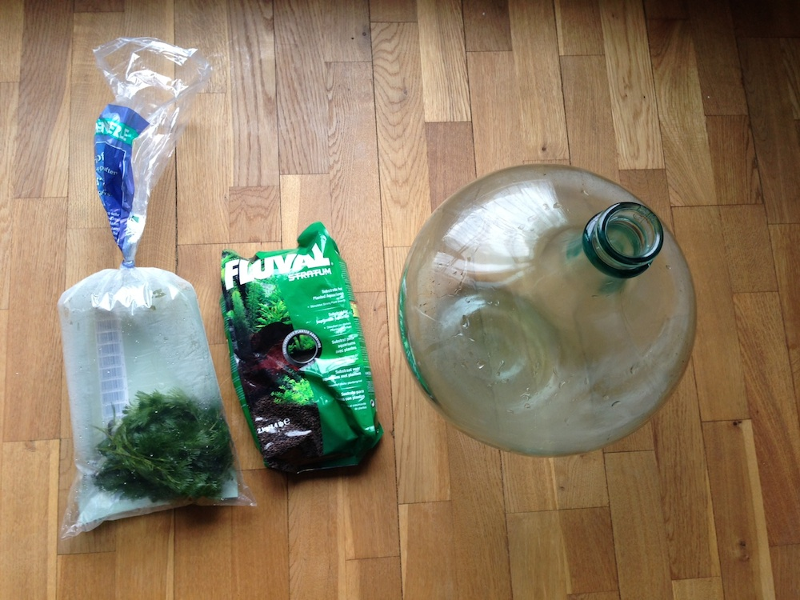
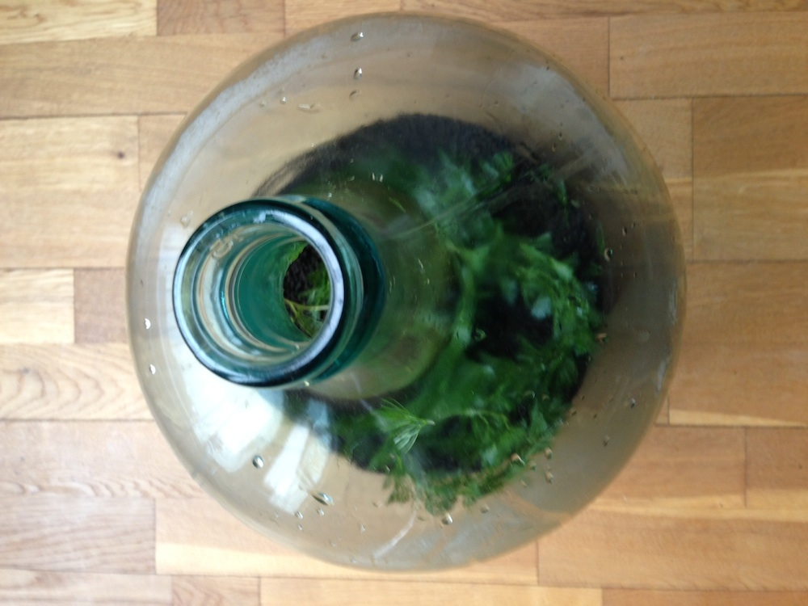
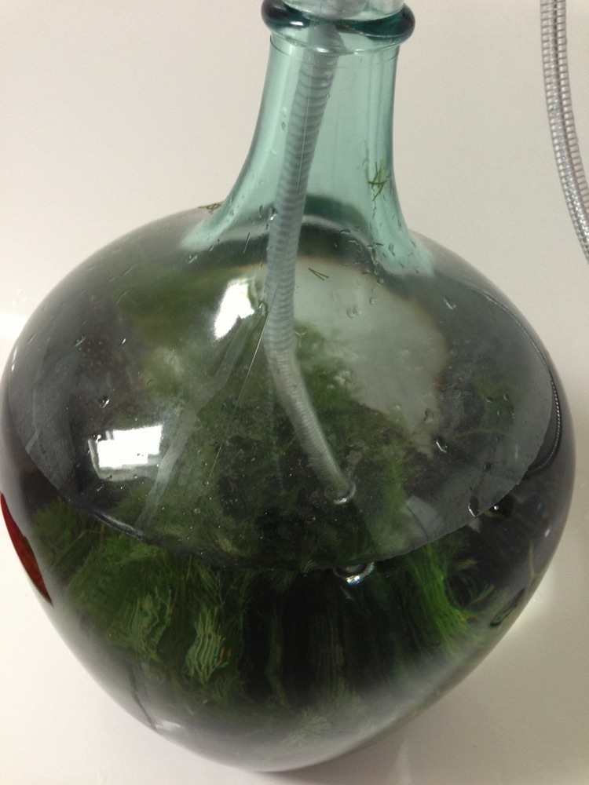
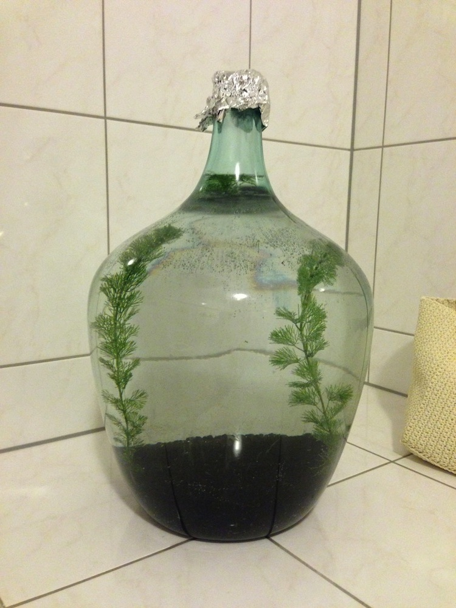

A recent article in the Daily Mail showed a man who had created his own ecosphere by putting soil and some waterplants into a bottle, filling it with water and sealing it. He hasn't had to put any new water into it for 40 years and inside the bottle is a fully functioning ecosystem.
This got me so excited that I started researching on various sites. There are companies that offer small finished ecospheres with little freshwater shrimp inside. To be honest I don't like the idea of keeping animals in small glasses.
After some more research and time I decided to just go for it and bought a bottle (15 liters) and aquarium soil (2 kilograms). My experience from aquariums and also reading various articles on the web I decided to get a fast growing plant called Cabomba caroliniana. Another candidate is Elodea which isn't very picky when it comes to water quality.

You should not get too many plants as they should grow into the ecosystem themselves. I only got one bunch of Cabomba caroliniana and will watch it grow over the next few weeks. Hopefully I can report back positively next time I write about this.
Putting the soil into the bottle and getting the plants into the ground through the hole in the bottle turned out to be quite tricky. I used a long stick to push the plants into the ground.

After planting I was set to add water. I just unscrewed the shower head and slowly added water to not wash the plants out of the soil. After 2 minutes the bottle was filled with water. I didn't seal it just yet. In a few weeks I will add some freshwater shrimp and seal it. You will be able to read about it here!

If you are wondering about the prices, all of this cost me around 50 euros. You can get these kinds of glassbottles on Ebay, for example.
